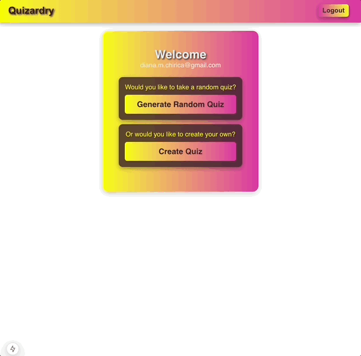

Projects
Faebook
A social platform built with Rails, React, and TypeScript. Features real-time chat, AWS S3 image uploads, and TDD.

Quizardry
A quiz app built with Next.js and Supabase for Google OAuth. Users can generate quizzes by category, difficulty, or random.
Cupid’s Hearts
A JavaScript game similar to Asteroids, powered by HTML Canvas and math-based collision logic.